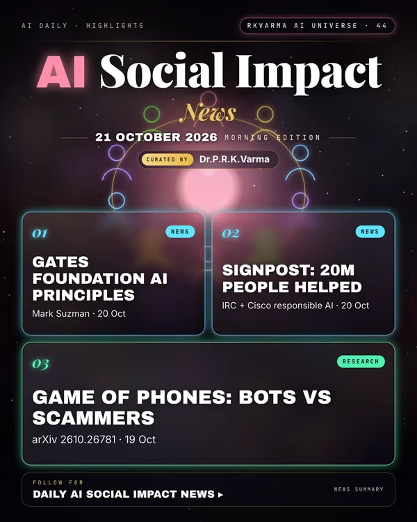

Latest updates · 21 October 2026
In the full issue →Philanthropy is setting rules for AI that serves people: the Gates Foundation has published its first AI principles, and Cisco describes how it supports the IRC's Signpost crisis-information service with responsible AI.
Research, industry & policy
- Gates Foundation shares its AI principles, Gates Foundation · 20 Oct 2026: Chief executive Mark Suzman sets out the principles that will guide the foundation's use of AI, alongside its commitment of $1 billion over two years to help health workers, teachers and farmers adapt AI tools to their needs.New today
- Connecting people to humanitarian assistance with responsible AI, Cisco · 20 Oct 2026: Signpost, led by the International Rescue Committee, has helped 20 million people find verified information about crisis assistance; Cisco's support dates back to its precursor in 2015.New today
Journals & preprints
- Game of Phones: Harnessing Game Theory and LLMs in 'Bot Wars' to Counteract Phone Scams, arXiv 2610.26781 · 19 Oct 2026: Uses game theory and LLM bots to tie up phone scammers and waste their time.New today
Why it matters
Principles and long-term partnerships decide whether AI for good reaches the people it is meant to help.

